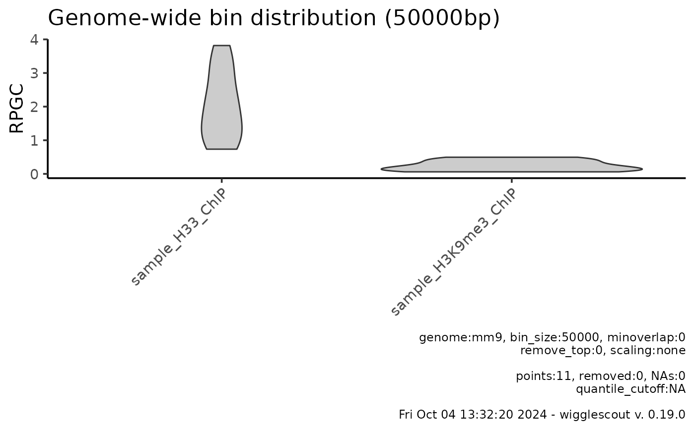

Plots a violin plot of bin distribution of a set of bigWig files optionally overlaid with annotated bins. Bins overlapping loci of the provided BED file will be shown as a jitter plot on top of the violin plot.
Usage
plot_bw_bins_violin(
bwfiles,
bg_bwfiles = NULL,
labels = NULL,
bin_size = 10000,
per_locus_stat = "mean",
genome = "mm9",
highlight = NULL,
minoverlap = 0L,
norm_mode = "fc",
highlight_label = NULL,
highlight_colors = NULL,
remove_top = 0,
verbose = TRUE,
selection = NULL,
default_na = NA_real_,
scaling = "none"
)Arguments
- bwfiles
Path or array of paths to the bigWig files to be summarized.
- bg_bwfiles
Path or array of paths to the bigWig files to be used as background.
- labels
List of names to give to the mcols of the returned GRanges object. If NULL, file names are used.
- bin_size
Bin size.
- per_locus_stat
Aggregating function (per locus). Mean by default. Choices: min, max, sd, mean.
- genome
Genome. Available choices are mm9, hg38.
- highlight
BED file to use as highlight for subgroups.
- minoverlap
Minimum overlap required for a bin to be highlighted.
- norm_mode
Function to apply to normalize bin values. Default fc: divides bw / bg. Alternative: log2fc: returns log2(bw/bg).
- highlight_label
Label for the highlighted loci set
- highlight_colors
Array of color values for the highlighted groups.
- remove_top
Return range 0-(1-remove_top). By default returns the whole distribution (remove_top == 0).
- verbose
Put a caption with relevant parameters on the plot.
- selection
A GRanges object to restrict binning to a certain set of intervals. This is useful for debugging and improving performance of locus specific analyses.
- default_na
Default value for missing values
- scaling
If none, no operation is performed (default). If relative, values are divided by global mean (1x genome coverage).
Examples
# Get the raw files
bw <- system.file("extdata", "sample_H33_ChIP.bw", package="wigglescout")
bw2 <- system.file("extdata", "sample_H3K9me3_ChIP.bw",
package="wigglescout")
bed <- system.file("extdata", "sample_genes_mm9.bed", package="wigglescout")
# Sample bigWig files only have valid values on this region
locus <- GenomicRanges::GRanges(
seqnames = "chr15",
IRanges::IRanges(102600000, 103100000)
)
plot_bw_bins_violin(c(bw, bw2), bin_size = 50000, selection = locus)
#> Warning: Not all bigWig files or the genome tiling provided share the same sequence info.
#> Common to all (1): chr15
#> Missing in some of the files: chr1, chr2, chr3, chr4, chr5 ...
#> This can be due to different versions of the same reference genome, or to completely different organisms. Make sure these match!

# You need to provide as many color values as bigWig files when highlighting
plot_bw_bins_violin(c(bw, bw2), bin_size = 50000, selection = locus,
highlight = bed, highlight_label = "Genes",
highlight_color = c("black", "black"))
#> Warning: Not all bigWig files or the genome tiling provided share the same sequence info.
#> Common to all (1): chr15
#> Missing in some of the files: chr1, chr2, chr3, chr4, chr5 ...
#> This can be due to different versions of the same reference genome, or to completely different organisms. Make sure these match!